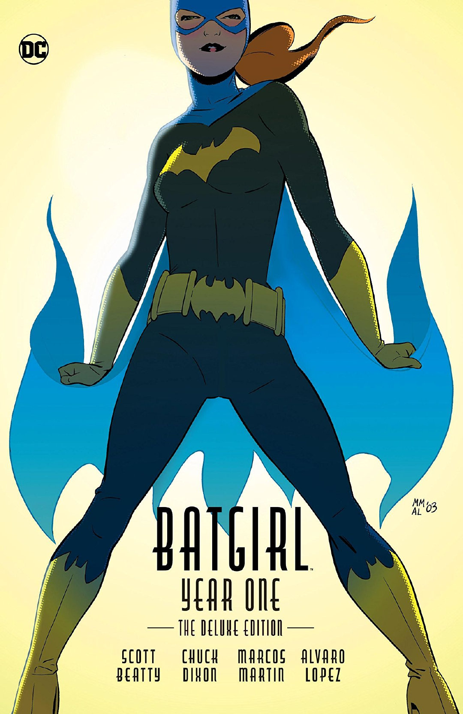

UA汉化组
【书单推荐】十佳芭芭拉·戈登故事
原创
2019-07-30 阅读 36639
10、战栗杀手（Thrillkiller）
芭芭拉的个人刊和团队刊故事还是不少的，所以能放在第十名这个位置上的选择有很多，思前想后觉得找一点不为人知的冷门故事进行推荐应该是个比较好的选择.
战栗杀手是1997年DC出版的三期异世界短篇故事，故事的舞台是六十年代。在这个世界里，布鲁斯韦恩是一个普通警探，而哥谭的守护者则是芭芭拉·戈登，她最近找到了一个名叫罗宾的助手，两人则要一同对付性感的女体版小丑……上世纪九十年代的异世界风潮中出现了很多对蝙蝠侠重新诠释的作品，而这一部以它浓厚油腻的画风及独特的大女主视角成为了其中备受好评的代表。
9.家园（《蝙蝠女郎》V4 #25）
零年系列的支线故事其实都很好看，因为我们看到了早年间稚气未脱的英雄们。这期《蝙蝠女郎》#25就是蝙蝠侠零年的支线，在被暴雨席卷的哥谭之中，年幼的芭芭拉面对着手拿武器无法无天的暴徒，但她却勇敢地在这场天灾人祸之中救出了几十名无辜群众。
芭芭拉有过很多身份，她是蝙蝠女郎，她是神谕，她是戈登局长的女儿，她是蝙蝠侠的门徒。但即使抛开这些身份，即使没有任何技能，在灵魂深处，她从始至终都是那个勇敢又善良的少女，这也是我们热爱她的原因。
8.黑金丝雀/神谕:猛禽小队
1996年，伟大又善良的Chuck Dixon决定给芭芭拉（当时已经是神谕了）一本团队刊，于是他拿来了当时没有固定刊物的黑金丝雀，让两位女英雄共同解决了一场恐怖分子袭击，也正是在这时，她们意识到有一些问题是永远无法独自解决的。于是三个月之后，《猛禽小队：追捕》短篇开始连载，这个备受喜爱DC女性英雄团队正式揭开了二十多年的历史。
这也是画师Gary Frank的早期作品。
7.最后的蝙蝠女郎故事（1988蝙蝠女郎特刊）
这期故事挖出了一个被人遗忘的尘封往事——《侦探漫画》#491中，芭芭拉曾被一个名叫“鸬鹚”的三流反派刺杀，她通过假死逃过了一劫，但是心中却永远留下了恐惧。而在如今，芭芭拉在调查一件凶杀案时，再次遭遇了鸬鹚，往日的旧伤、扑朔迷离的案件和强大的新敌人，芭芭拉在这短短的一期故事中经历了磨难与蜕变，也使得本故事的内容极其地丰满与充实。
值得一提的是，在本故事最后，芭芭拉将蝙蝠女郎的制服送给了朋友，她认为自己可以改用其他方法守护正义。而本刊出版于1988年三月，没错，几周之后《致命玩笑》出版了。虽然最初摩尔认为那是个异世界故事，但是这里芭芭拉放弃身份的剧情却和它完美衔接，让致命玩笑并入主宇宙连续性也显得顺理成章。
6.猫与蝙蝠(《蝙蝠侠：机密》#17-21)
作为蝙蝠家族最重要的两位女性角色，这是芭芭拉和猫女少有的对手戏。由于致命玩笑的存在，芭芭拉的很多故事都充斥着一股虐心催泪的气息，但这个故事则可以算是胡闹欢乐到了极致，猫女偷走了戈登局长的一本笔记，所以芭芭拉前去追赶，途中两人插科打诨撩猫逗狗，甚至误入大保健场所秀了一波福利，最后在蝙蝠侠的调停下，三人一起打败了犯罪分子，猫女也把笔记还了回来……
是一个没什么深意和历史影响的故事，但单纯地就是好看，就是欢乐，就是可爱，蝙蝠侠夹在两个女人之间的样子也很搞笑。
5.通缉犯（《蝙蝠女郎》V4#19-25）
西蒙阿姨执笔的蝙蝠女郎V4都非常好看，“通缉犯”则是其中绝对的高潮，蝙蝠女郎失手杀死了小詹姆斯·戈登，陷入悲伤与狂怒的戈登局长下定决心要抓住蝙蝠女郎为儿子报仇，却不知道仇人竟然就是自己的亲生女儿芭芭拉。而认为自己害死了弟弟的芭芭拉则万念俱灰，这次她的对手不是别人，恰恰是自己最亲的父亲，而心中的苦痛，也无法开口倾诉……这是一个充满了黑暗与虐心的故事，每一次芭芭拉与戈登局长的对话，都像是在往读者的心口插刀
4.失控（《自杀小队》V1 #48-49）
提到芭芭拉，就无法绕开致命玩笑。在那次惨剧之后，她就被送进了自杀小队刊里担任配角“神谕”，最初她的戏份不是很显眼，但直到“失控”这个故事，恶棍思想者企图控制芭芭拉来颠覆自杀小队，却发现芭芭拉的精神力超乎想象地强大——她没有被致命玩笑击溃，而是让残疾成为了鼓舞自己更加自强的动力。也许在我们看来，致命玩笑是一个肮脏暴力、宣扬着虚无主义的故事，但对于芭芭拉，那是一次成就她强大的凤凰涅槃。
3.神谕:元年（《蝙蝠侠编年史》#5）
芭芭拉的身份转变故事我们都很熟悉了，她被小丑枪击瘫痪，于是加入自杀小队担任技术支援，代号改为神谕。但在这之间发生的事情一直是个空白，直到那一对将芭芭拉变成神谕并引入自杀小队刊的编剧夫妇——John Ostrander和Kim Yale在几年后创作了这本“神谕元年”，让我们知道了芭芭拉的心态变化，从挣扎、崩溃、自我怀疑，再到重新振作并燃起希望，这是芭芭拉作为神谕重生的励志故事，也足以给每个人力量。
不幸的是，帮芭芭拉获得新身份的伟大女编剧Kim Yale，在写完本故事的一年后便因为乳腺癌而英年早逝了。
2.展翅翱翔（《猛禽小队》#8）
也上过十佳迪克故事的一本刊，一本简单粗暴的迪克&芭芭拉发糖刊，彼时猛禽小队刚成立不就，然后迪克在猛禽刊客串登场，邀请芭芭拉去约会，两人一起观看了马戏表演，最终迪克帮助下肢瘫痪的芭芭拉完成了飞人特技。
甜蜜，感人，浪漫，如果你要选DC史上最甜的故事，它肯定位列前三。这本刊的原本在ebay上现在可以卖到50美元，都是迪芭党炒上去的。
1.蝙蝠女郎：元年

注意啊这个是2003年的九期独立故事《蝙蝠女郎元年》，和《神谕元年》是不一样的。所以芭芭拉就成了世上唯一一个有两部元年的角色。编剧又是Chuck Dixon，他写的不论是芭芭拉还是迪克都是性格超好的，可以说是编剧界的老天使。
本故事可以说是在新世纪中对蝙蝠女郎起源故事的重新演绎，她不再是对蝙蝠侠心怀崇拜的迷妹，而是一个一心女承父业加入警队的年轻学生。但由于父亲的过度保护和警界的性别歧视，让芭芭拉颇为不顺。在一次化装舞会上，打扮成女装蝙蝠侠的芭芭拉成功阻止了一名罪犯，也由此走上了义警之路……
这是一个关于自立自强的故事，而初出茅庐的画师 Marcos Martin 和 Alvaro Lopez的画风与芭芭拉的青春活力简直是天作之合
UA汉化组创作，未经许可不得转载
评论 16
- Kstera2019-07-31 08:21:29补补补，不过我超在意猫女说but robin has better legs 是什么情况[允悲]
- 华氏度9112019-07-30 23:51:44只要不给我提夜翼年刊V2我就可以，要求就是那么低
- 嗨荇2019-07-30 22:27:34老漫见过几次除外，不得不说很多画师不适合画墨菲这套bra外穿
为你推荐更多精彩
Ame_Yoi
02-14 22:56
欧风漫画的经典《蔷薇下的真相》-冬天的故事篇
推一本史前巨坑，《蔷薇下的真相》 这本初连载在2002年，目前台版日版都出版到10卷，由于18年连载的杂志倒闭，这本后面转到网络连载，但是可以看做年刊🥲，到今年已经连载了20个年头了 这本推荐会拆分成两部分，因为故事也有按季节分章节 先... 全文
游戏十三哥
01-05 18:06
哈利波特手游：这些最意难平的角色，希望能成为游戏里永远的T1！
《哈利波特：魔法觉醒》公测三个多月的时间里，已经更新了不少内容。根据策划Q&A环节的回答，未来也将会有更多的人气角色登场。其中，就包括阿不思·邓布利多，阿拉斯托·穆迪以及小天狼星·布莱克这三位让人非常意难平的角色。 &n... 全文
蓝鸟斗士
02-07 08:47
个人心中的女猎手（海伦娜•贝蒂内利）十佳漫画
10、《缄默法则》(Code of Silence, Huntress Vol.1 #1, 1989) “海伦娜·贝蒂内利走了，她曾是一副掩盖了大量痛苦、情感和恐惧的面具，现在旧的面具已经裂开，坚忍不拔、伶牙俐齿...…所有的这些品质都被分解，用来为新的自己提供燃料。海伦娜以为她很吓人，但她无法让任何人害怕，现在是时... 全文
翠莲奈尔
2021-12-19 22:23
烂番茄新鲜度96%，仅1差评，猎魔人第二季口碑炸裂，远超第一季均分！
《猎魔人》第二季来了，据说超人亨利·卡维尔的颜值被刷爆了。烂番茄新鲜度96%，22鲜仅1烂，均分高达8.1分，远超第一季的68%和6.6均分。 帅是真的帅，但有一说一，看第一部的时候就把我看得云里雾里。 故事线乱到不行，时间交错复杂而且... 全文

漫威无限漫画
02-25 18:00
金刚狼漫画史第一弹：身世缘起|从羸弱男孩到狂野男子
他来自何处？究竟是人类还是野兽？漫威无限特别呈现金刚狼完全解析第一弹：身世缘起。
有人将他视作人类，也有人觉得他只是动物。他有过许多名字，但最著名的还数“变种人金刚狼”。这位手带三根钢爪的X战警历史悠久——也因为他活得够久！那么他究竟从何而来？为何会有这样强大的力量？从普通男孩詹姆斯·豪利特到喀拉喀瓦岛守护者金刚狼，他一... 全文
海星创造
2021-12-30 16:52
洛基为你揭晓漫威宇宙秘密起源！
追溯史前，超级英雄从何而来？ 洛基为你揭晓漫威宇宙秘密起源！ 复仇者团队全新重组！ 更有深海捍卫者、美国至高中队、凛冬守卫、吸血鬼军团登场！ 众多超级英雄分庭抗礼，开启地球最强英雄的新纪元！ 《复仇者联盟1～3》（2018）系... 全文
漫威无限漫画
2021-12-31 17:40
《邪恶战争》：蜘蛛侠反派大集结！彼得·帕克以一敌三十
每个超级恶棍都想争夺杀死蜘蛛侠的权力，邪恶战争就此拉开序幕...
自从编剧尼克·斯班瑟开启本卷《神奇蜘蛛侠》(2018)，彼得·帕克与玛丽·简·沃森便被恶魔般的反派“血族”所恐吓。他声称自己是哈利·奥斯本，但他的故事却远比老朋友由正转邪更为复杂。在斯班瑟与马克·巴格利、费德里科·维森蒂尼、泽·卡洛斯、马塞... 全文
虎扑游戏站
01-02 13:46 来自专栏 虎扑游戏评测团
[虎扑评测团]FF7RE：爱丽丝的重逢花语，米德加的命运洪流(上)
*本文内容基于EPIC平台的PC版本 *由于本文的篇幅较长，所以将分为(上)、(下)两个部分
合计包含以下内容： Part.0 引言：FINAL FANTASY VII REMAKE，不止是重制 Part.1 高塔：层级与分离 Part.2 命运：花与爱丽丝 Part.3 恋人：小太阳蒂法 Part.4 愚者：克劳德与猫 Part... 全文
影探探长
01-07 18:25
倾家荡产拍出的神片，强者恐怖如斯！
“扶植导演”——最近听到最响亮的口号。前有《导演请指教》，后有《开拍吧》。搞综艺，上热搜，有热度。大阵仗，大投资，大噱头。追过几期，心生遗憾。不为电影，而为动画。因为自2019年起，B站就开始搞“小宇宙计划”，也为扶植，意在动画。2021年... 全文

剧民V
02-14 07:41 来自专栏 影视剧
《龙珠》沙鲁篇一直捧悟饭，为何没有取代孙悟空当主角？
孙悟饭没有当主角的魅力。剧情里能看出，《龙珠》确实有一段要扶悟饭当主角，可后来放弃了。原因多方面，这里着重说一条：悟饭没有主角魅力。就像我们生活中说的“一个好汉三个帮”，单位里还有一正俩副。到了《七龙珠》里，主角团里的角色都是悟空的副手，贝吉塔和比克分别还是武力、智力担当。这就是悟空的主角魅力。他能把遇到的对手变成... 全文
聋子小哥
02-16 15:27
用写实画风打开鬼灭之刃，伊之助颜值崩坏，被蛇柱的眼神帅到了
各位屏幕前的漫迷们，大家好，我是一年三百六十五天都在陪你看动漫的动漫奇谈。 鬼灭之刃作为一部现象级作品，第一季动画播出时人气非常高，连漫画也被带火了，销量一度超越蝉联多年销冠的海贼王。如今鬼灭之刃已经更新了第二季，剧场版的内容即将结束，马上... 全文

茶子_缓慢填坑中
2021-12-19 23:09
《華ヤカ哉、我ガ一族ns三部全通repo/安利/一些攻略》
出现的所有观点和感想都是纯个人的！
一些写在开头的碎碎念 说实话一开始了解到华族的时候画风没有太吸引我，刚刚打完幻奏完全没想到这一部的キャラクターデザイン也是ユウヤ老师，在此之前也没有接触过高木亚由美老师的作品，真正被种草是因为看了白鸟太太的安利视频，感谢太太让我没有错过这个... 全文

情报姬_
02-22 16:42

漫威无限漫画
2021-12-17 17:01
鹰眼(2012)：他是鹰眼，她也是鹰眼，这是他们的故事
漫威宇宙有不止一位鹰眼，但只有超凡脱俗的漫画系列才能让克林特和凯特共同成为舞台上的主角。2012年，编剧马特·弗拉克森与画师大卫·阿甲共同创作了《鹰眼》(2012)。这个系列共22话，一经问世立刻成为了粉丝最喜爱的经典漫画，也同时获得了艾斯... 全文

动漫起航者
01-18 16:29
《数码宝贝》动画最具人气数码兽是哪只？
我个人认为人气最高的数码兽是亚古兽，《数码宝贝》第一部和第二部剧情是连着的，第一部中亚古兽就是主角，各种高光表现都给了他，第一个进化的总是它，黑暗进化别的主角数码兽都没尝试过，亚古兽变过。这段剧情这段戏份，不同的漫迷有不同的看法，甚至还有人... 全文
GameRes游资网-林德辉
2021-12-15 11:10
再评《赛博朋克2077》，更加复合、深刻且苦涩的情绪体验
作者：板斧。主业金融投资，兴趣聚焦游戏与设计，想写点好的、有意思的；欢迎来 http://markonreview.com/ 看看。 写在前面： 笔者对本作的体验覆盖了游戏首发至今的各版本，本文对游戏内容的描述基于最新的 1.31 版... 全文
鄂之巨人马赛尔
2021-12-21 19:15 来自专栏 动漫面面观
动漫：惊艳了一代人的天使迷梦，是个什么样的故事？
这部漫画给人的感觉非常梦幻，但很多东西都是取材于现实
近20年前，《天使迷梦》的漫画版、小说版风靡大陆，华美而充满了遗憾的笔触不知让多少人碎了心。 文/颚之巨人马赛尔 多少人渴望像女主角回声那样有自己的守护天使，多少人对沙加这对爱恨纠缠的双生天使哀其不幸、怒其不争。 双线并进，谜团逐渐展开，但... 全文
Fullmoonedge_
02-02 16:23
Postype个人向米棒推文第一弹
稍微总结了部分Postype上觉得比较好看的文章，如果有帮助的话还会再做！ 因为tc目前粮不太多翻译老师也有限，所以有能力的话还是完全可以尝试靠papago进行基本的阅读～ 可以直接打开也可以复制链接到papago ps翻译仅供参考，postype和papago使用方式不了解可以随时询问或者自搜 中短篇 1.... 全文
电影审片官
2021-12-17 19:08
全球热度第一，不愧是漫威年度压轴剧！
少女和大叔，携手牵狗作战， 初代谢幕，二代登场， 圣诞合家欢剧集锁定。 官姐评分：8.0。 说起初代复联六人组，鹰眼是目前唯一没有个人独立电影的英雄。 其他人要么背负惨痛身世、要么拥有惹人艳羡的超能力， ... 全文

加载中...